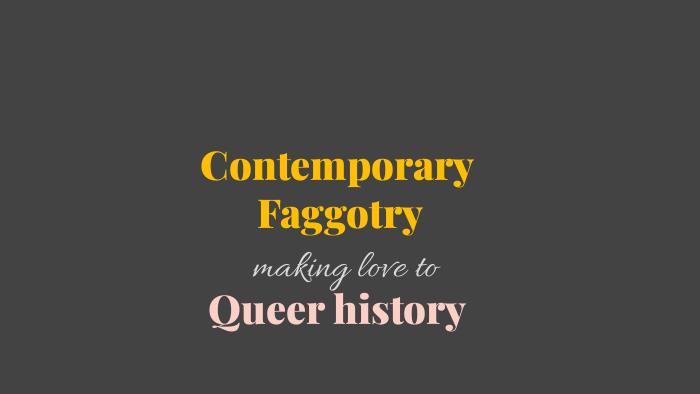
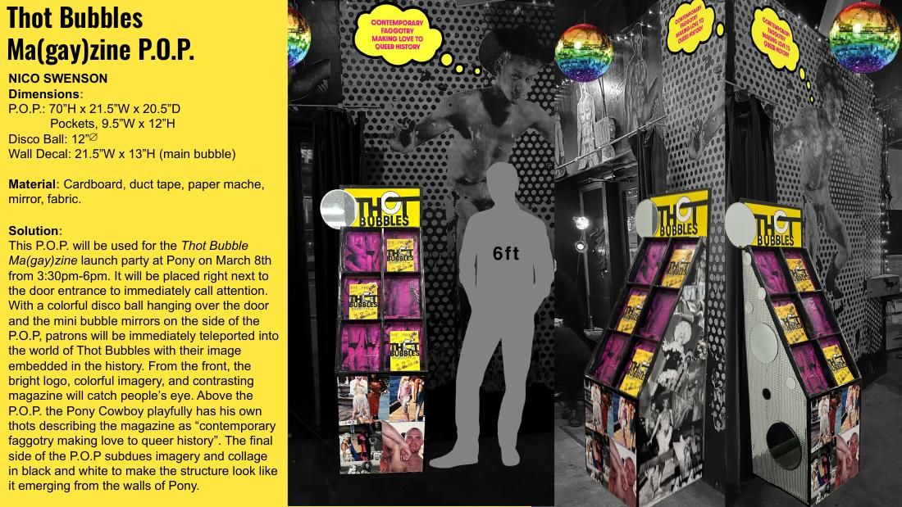

← All projects · Print · 01
Thot Bubbles Ma(gay)zine
"Contemporary faggotry making love to queer history." Seattle's queer culture magazine — plus a custom point-of-purchase display and pop-up launch event.

Unite two queer worlds.
Unite contemporary queer culture of the PNW with its historic queer arts and nightlife lineages — in a single publication that feels at home in both Capitol Hill and Granite Falls.
A multi-genre LGBTQIA+ ma(gay)zine.
Thot Bubbles is a multi-genre LGBTQIA+ ma(gay)zine — including lyric essays, photo essays, poetry, and interviews — that celebrates and documents Seattle's vibrant queer community through locally focused, creatively varied content.
The project intentionally reaches beyond Capitol Hill into suburban and rural Pacific Northwest communities like Granite Falls, ensuring representation across demographics inside the LGBTQIA+ community. These editorial parameters simultaneously expand the audience and offer readers something they can't get anywhere else: a meaningful portrait of themselves in their geographic region.
The full scope includes the print and digital magazine, an accompanying point-of-purchase display, a pop-up launch event with QR-driven sales and signage, and a continually expanding brand of creative content and events.
Who it's for.
- Community "Elders" — Queer individuals 50+ who paved the way and continue to keep the community thriving. Seeing themselves reflected and respected is a key throughline.
- Out & About Fags — The Seattle Queerdos: nightlife-goers, gender transgressors, and cross-generational readers looking for information and inspiration.
- Local Queer Trendsetters — 21+ artists and scene makers of the current and future Queermunity, culminating diverse perspectives on Queerness, aesthetics, and activism.
a tightly disciplined design system — moodboards, master pages, paragraph and character styles in InDesign — is what makes wildly different content feel like one publication. Restraint at the system level frees the content to be loud.
Brand traits, logo, palette.
Tagline: "Seattle's Queer Culture Magazine — Contemporary faggotry making love to queer history."
Trait words: Lineage · Levity · Locality.
Color palette
Vintage shades with pops — sampled from final cover, spread layouts, and POP environment.


Put the elders and the makers in the same room.
Create a ma(gay)zine and accompanying events that put historic and contemporary queer culture-makers into the same place.
The curation ("Queeration") of the magazine includes articles about historic queer places still inhabited by queer events, interviews with culture-makers who paved the way for queer nightlife in the PNW, and current makers of nightlife, art, and culture in the region's queer scene.
The largest success was the launch party, where younger queer readers met elder queers and shared stories sparked by the magazine's content. Readers procured copies from a custom point-of-purchase that featured images of the editors, content creators, and adjacent event photography from prior years of queer programming — turning the display itself into part of the story.